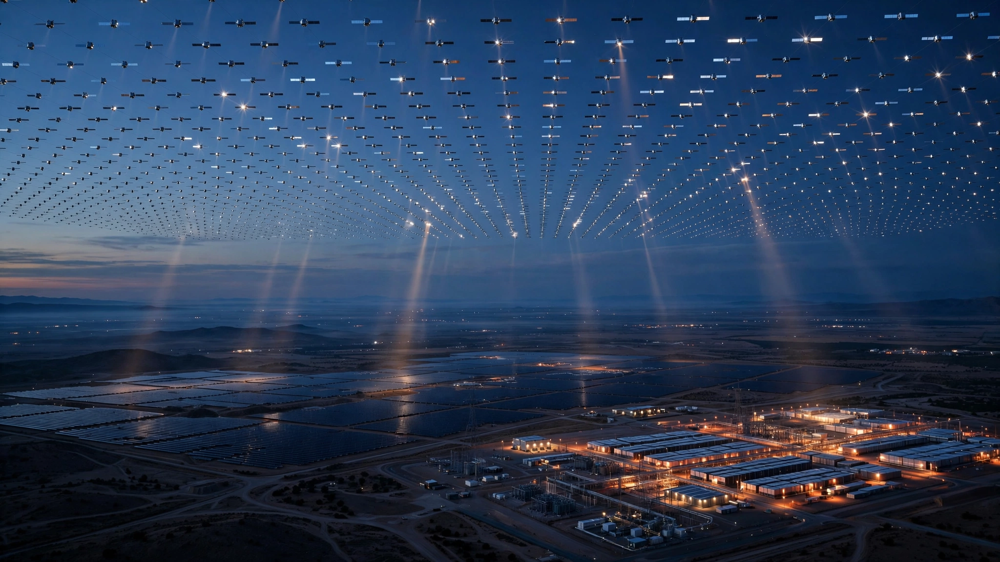

Reflect Orbital Got FCC Approval for Space Mirrors. Batteries Already Do the Same Job for 500× Less.
A startup just received federal permission to launch a satellite that bounces moonlight-intensity sunlight onto Earth at night. Its 50,000-mirror constellation would need 81,000 satellites to light a single solar farm for two hours. A $26 million battery bank does the same thing today.

Fifteen thousand. That is how many times fainter a single Reflect Orbital satellite would be compared to the midday sun, according to calculations by astronomers at Monash University and Leiden University. On July 9, 2026, the Federal Communications Commission granted the Hawthorne, California startup a license to launch Eärendil-1, an 18-meter-by-18-meter deployable mylar mirror that will orbit 625 kilometers above Earth and bounce sunlight onto a five-kilometer patch of ground. What you would see from that patch: a dot in the sky roughly as bright as a full moon.
One satellite is a demo. Reflect Orbital wants 50,000, and CEO Ben Nowack has outlined a roadmap to 1,000 mirrors by 2028, 5,000 by 2030, and a full constellation of 50,000 satellites by 2035, eventually scaling to a quarter-million units capable of delivering 200 watts per square meter to solar farms after dark, extending their generation window deep into the night. Investors including Sequoia Capital, Lux Capital, and Starship Ventures have contributed $35.2 million to the effort. But the physics of orbital reflection tells a story the pitch deck omits.
Running the Photon Budget
Start with Eärendil-1's mirror: 324 square meters of aluminized mylar, gossamer-thin, folded like origami until it reaches orbit. Above the atmosphere, the solar constant delivers 1,361 watts per square meter. At a practical reflectivity of 85 percent, the mirror captures about 375 kilowatts of sunlight and redirects it earthward. Atmospheric absorption and scattering over a slant path strip roughly 25 percent. Net power reaching the ground: approximately 281 kilowatts. Spread across the 19.6-million-square-meter beam area of a five-kilometer circle, that yields 0.014 watts per square meter at the surface, or about 1.7 lux.
Reflect Orbital's own specifications list 0.1 lux for the test satellite, closer to full-moon brightness. Mirror wrinkles, pointing losses, and surface degradation in the space environment likely account for the gap between theory and spec, but either way both numbers land in the same territory: bright enough to cast shadows on a clear night, nowhere near bright enough to make a solar panel care.
Scale up to the production design. Reflect Orbital's full-size mirrors would measure 54 meters across, with 2,916 square meters of reflective area, and repeating the photon budget at 800 kilometers of slant range (satellites are rarely directly overhead) shows the beam spreading to at least seven kilometers while irradiating the ground at about 0.066 watts per square meter. Midday sunshine delivers 1,000 W/m². One mirror captures 0.0066 percent of that.
81,000 Satellites for One Solar Farm
Reflect Orbital's stated target is 200 W/m², or 20 percent of the midday sun, enough to keep photovoltaic panels producing meaningful electricity after sunset. At 0.066 W/m² per satellite, achieving 200 W/m² requires roughly 3,000 mirrors in view of a single location simultaneously. Astronomers Michael Brown and Matthew Kenworthy confirmed this figure independently: 250,000 satellites would illuminate no more than 80 locations at once, and only at 20 percent solar intensity.
But "in view simultaneously" understates the problem considerably, because at 625 kilometers altitude a satellite crosses 1,000 kilometers of ground track in 3.5 minutes before moving beyond useful range, and its 95-minute orbital period means each mirror spends only 3.7 percent of its orbit over any given target. To provide continuous two-hour illumination at 200 W/m², you do not need 3,000 satellites; you need 3,000 divided by 0.037, which is approximately 81,000 satellites dedicated to a single solar farm.
Eighty-one thousand for one farm.
Assign each satellite an aggressive unit cost of $250,000, comparable to early Starlink v1 economics even though Reflect's mirrors are larger and more mechanically complex. Lighting one 100-megawatt solar farm for two evening hours costs $20.25 billion in space hardware alone, before operations, replacement of de-orbiting satellites, or ground-station infrastructure.
What Batteries Cost Instead
A 100 MW solar farm that wants two extra hours of evening output needs 200 megawatt-hours of storage capacity. Cost at the 2026 benchmark price of $130 per kilowatt-hour for utility-scale lithium iron phosphate batteries: $26 million installed. Fully loaded with balance-of-system hardware, the figure rises to roughly $40 million, which buys equipment that works in the rain, at night, in any season, with round-trip efficiency between 85 and 92 percent and a 15-to-20-year lifespan showing less than 20 percent capacity degradation.
Put those numbers side by side, and it is not close.
| Metric | Space Mirrors | Battery Storage |
|---|---|---|
| Cost per farm (2-hr extension) | $20.25 billion | $26–40 million |
| Satellites or units required | ~81,000 | ~500 battery packs |
| Weather dependency | Yes (clouds block beam) | No |
| Available today | No (2035 earliest) | Yes |
| Round-trip efficiency | ~17% (mirror + PV) | 85–92% |
| Environmental review required | FCC says no | Standard permitting |
Even granting a miraculous 10× cost reduction from manufacturing scale, space mirrors would still run 50 to 80 times more expensive than the storage technology that already sits on concrete pads at hundreds of sites across the American Southwest and Australia, technology whose cost Bloomberg New Energy Finance projects will fall below $100/kWh by 2028 as production capacity in China and the U.S. continues to expand.
Thirty-Three Years of Failed Space Mirrors
Reflect Orbital is not the first to try this. In February 1993, Russian engineers aboard the Mir space station deployed Znamya 2, a 20-meter aluminized mylar mirror designed by Vladimir Syromyatnikov, the same engineer who built the Soyuz-Apollo docking mechanism. A five-kilometer beam swept across pre-dawn Europe from southern France to western Russia at roughly full-moon brightness, though cloud cover over the target cities meant few people on the ground noticed. Mirror worked perfectly; nobody cared.
Znamya 2.5 followed in 1999 with a larger 25-meter mirror that snagged on a Progress spacecraft antenna during deployment, and after controllers tried and failed to free it, the entire satellite was de-orbited and burned up in the atmosphere. A planned 60-to-70-meter Znamya 3 was cancelled outright. No space mirror has operated since.
Reflect Orbital's engineers, recruited from NASA's Jet Propulsion Laboratory, bring origami-folding deployment techniques that did not exist in the 1990s. Fair enough. But Znamya's core lesson was not about deployment. It was about photon economics: even a perfectly functioning mirror delivers only moonlight at ground level, and Russia abandoned the program not because the mirror broke but because the illumination was commercially worthless.
What 50,000 Mirrors Do to the Night Sky
Astronomers filed 1,800 comments on Reflect Orbital's FCC application. Most opposed it. Dr. Roohi Dalal, Deputy Director of Public Policy at the American Astronomical Society, warned of "flash blinding" for amateur astronomers looking through telescopes, temporary blindness for drivers and pilots, and irreversible damage to federally funded research facilities.
Olivier Hainaut of the European Southern Observatory ran simulations presented at the 2026 European Astronomical Society meeting modeling what a full 50,000-satellite constellation would do to observational astronomy, considering not just direct beam illumination but the atmospheric scattering that spreads light far beyond any target zone. His conclusion was blunt. Dark-sky sanctuaries would become as bright as suburban neighborhoods. Cities that currently show a few hundred stars would show almost none. "Disastrous can mean that we lose 100 percent of our data," Hainaut told IFLScience. "Basically, it kills the telescopes."
Timing sharpens the irony. Vera Rubin Observatory's Legacy Survey of Space and Time began operations on June 30, 2026. Nine days later, the FCC approved Eärendil-1. A $1.44 billion telescope that will photograph the entire visible sky every three nights now faces potential contamination from a startup with $35 million in venture funding and no obligation to coordinate with astronomers. DarkSky International and Public Employees for Environmental Responsibility both demanded a National Environmental Policy Act review before launch. No luck. "These harms are unlikely to occur," the FCC wrote.
Limitations
Our cost comparison assumes Reflect Orbital's satellites operate at the performance levels implied by their public statements and the independent Monash/Leiden photon budget calculations. If the company has undisclosed optical innovations that dramatically increase per-satellite irradiance, the satellite count per farm would decrease proportionally, though the physics of a 0.5-degree solar disk sets a hard floor on beam divergence. We also assume utility-scale battery pricing follows current BNEF projections; supply chain disruptions or mineral tariffs could raise costs. Finally, battery storage and space mirrors solve slightly different problems: batteries time-shift energy already generated during the day, while mirrors could theoretically add generation capacity at night. In practice, adding more daytime solar capacity and storing the surplus is cheaper than either approach and is the dominant industry strategy.
Reflect Orbital's counterargument deserves full weight. Batteries require lithium and cobalt mining with significant environmental footprint, while mirrors use only sunlight. Space mirrors could illuminate disaster zones, Arctic mining operations, or remote military installations where grid infrastructure does not exist and will never be economically viable to build. Early-stage costs always look prohibitive: Starlink satellites fell from over $1 million each to roughly $250,000 as manufacturing scaled, and whether mylar mirror satellites can follow a similar learning curve is a genuinely open question that only production data will answer.
What You Can Do
If you own or operate solar assets: Battery storage at $130/kWh solves the evening generation gap today. Four-hour lithium iron phosphate systems have achieved bankable track records across the U.S. Southwest and Australia. Waiting for space-based illumination is not a competitive strategy.
If you care about the night sky: The FCC explicitly declined environmental jurisdiction over Eärendil-1. That leaves Congress. Contact your representative about requiring NEPA reviews for intentionally reflective satellite constellations. No federal agency currently claims authority to assess the ecological, health, and astronomical impacts of orbital light pollution.
If you follow space policy: Watch for the Eärendil-1 launch, expected late 2026 via SpaceX Falcon 9. Ground-truth irradiance measurements from the test satellite will be the first real data point on whether the company's claims hold up against atmospheric scattering and mirror-quality reality.
The Bottom Line
Reflect Orbital has a real satellite, a real FCC license, and real investors who have put in $35.2 million. It also has a photon budget problem no amount of venture capital can fix. Delivering 200 watts per square meter to a single solar farm requires tens of thousands of mirrors, each visible for only 3.5 minutes per pass, at costs exceeding battery storage by two to three orders of magnitude. Russia tested this concept 33 years ago and walked away because moonlight does not generate electricity. What changed since 1993 is not the physics of reflection but the cost of batteries, which fell 97 percent over two decades and keep dropping. If Reflect Orbital's real product turns out to be disaster-zone lighting or military illumination rather than solar farm extension, the economics shift dramatically. But the pitch that attracted $35 million was about replacing fossil fuels with orbital mirrors, and the math on that particular claim is a 500-to-1 mismatch in the wrong direction.